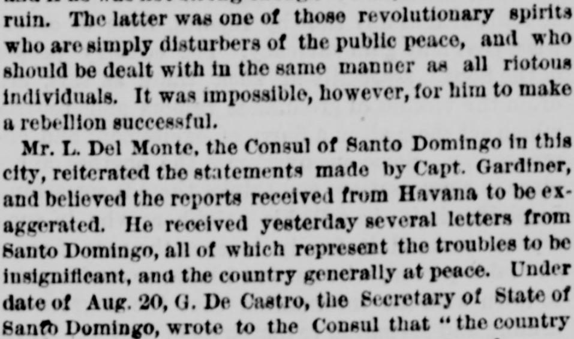

Who are simply disturbers of the public peace, and who shouldQuienes son simplemente perturbadores de la paz pública, y quienes deberían
New-York Tribune. New York [N.Y.], August 31, 1875. Page 1. View the originalVer el original

 See the full pageVer la página completa
See the full pageVer la página completa
The New-York Tribune reported on conflicting accounts of political unrest in Santo Domingo, where official government communications claimed disturbances in the Cibao were insignificant and well under control. Conversely, private letters from Puerto Plata revealed a conspiracy backed by Spanish authorities in Puerto Rico to restore Buenaventura Báez, leading to the expulsion of a prominent Spanish merchant whose correspondence exposed the plot.El New-York Tribune dio cuenta de versiones contradictorias en torno a la agitación política en Santo Domingo: mientras los comunicados oficiales del gobierno aseguraban que los desórdenes en el Cibao carecían de importancia y se encontraban plenamente controlados, cartas privadas desde Puerto Plata descubrían una conspiración respaldada por las autoridades españolas de Puerto Rico para restaurar a Buenaventura Báez, hecho que condujo a la expulsión de un destacado comerciante español cuya correspondencia delató el complot.
FULL TEXT:TEXTO COMPLETO:
him, and in favor of Baez. That class of people, said the Captain, preferred brute force to moral suasion, and harsh measures to a humane policy. The Government was endeavoring to negotiate a loan of $3,000,000 in Europe, and Baez imagined that by inciting a revolution he could defeat the project, overturn the Government, and if he was not strong enough to rule, at least he could ruin. The latter was one of those revolutionary spirits who are simply disturbers of the public peace, and who should be dealt with in the same manner as all riotous individuals. It was impossible, however, for him to make a rebellion successful.él, y en favor de Báez. Esa clase de gente, dijo el Capitán, prefería la fuerza bruta a la persuasión moral, y las medidas duras a una política humana. El Gobierno estaba intentando negociar un empréstito de $3,000,000 en Europa, y Báez imaginaba que incitando una revolución podría derrotar el proyecto, derrocar al Gobierno, y si no era lo bastante fuerte para gobernar, al menos podría arruinar. Este último era uno de esos espíritus revolucionarios que son simplemente perturbadores de la paz pública, y que deberían ser tratados de la misma manera que todos los individuos revoltosos. Era imposible, sin embargo, que hiciera exitosa una rebelión.
Mr. L. Del Monte, the Consul of Santo Domingo in this city, reiterated the statements made by Capt. Gardiner, and believed the reports received from Havana to be exaggerated. He received yesterday several letters from Santo Domingo, all of which represent the troubles to be insignificant, and the country generally at peace. Under date of Aug. 20, G. De Castro, the Secretary of State of Santo Domingo, wrote to the Consul that “the country continues in its progressive march onward, and peace has been established, as you will ascertain by the result of certain movements in the Sibul district which have been begun against the Government. There is not the slightest doubt that the malcontents will be subdued.” Mr. Del Monte also received a private letter from Port-au-Platte, dated Aug. 23, in which it is stated that the “country is now undergoing a revolutionary movement, the result of which cannot be foretold. The truth of the matter is that the Spaniards are the chief actors in the plot against the Government and are acting in favor of Baez. The most prominent Spaniard in the city and a large real estate dealer, Señor Barrera, was ordered yesterday to leave the country in two hours. Treasonable correspondence between him and Gen. Sanz of Porto Rico was intercepted, and by it all the details of the conspiracy of the Spanish Porto Rico Government with the followers of Baez was revealed. In one of his letters, Gen. Sanz writes that the moment Baez shall succeed in getting possession of Santo Domingo he will inaugurate his accession by driving out all the Cubans in the country.” In another private letter received yesterday by the Dominican Consul, dated Santo Domingo, Aug. 20, it is stated that Gen. Caminero left for the interior on Aug. 15, with a large staff, under instructions to show no leniency to the rebels, but to secure peace and submission to the Government at all hazards.El Sr. L. Del Monte, el Cónsul de Santo Domingo en esta ciudad, reiteró las declaraciones hechas por el capitán Gardiner, y creyó que los informes recibidos desde La Habana eran exagerados. Recibió ayer varias cartas de Santo Domingo, todas las cuales representan los problemas como insignificantes, y el país generalmente en paz. Con fecha del 20 de agosto, G. De Castro, el Secretario de Estado de Santo Domingo, escribió al Cónsul que «el país continúa en su marcha progresiva hacia adelante, y la paz ha sido establecida, como usted comprobará por el resultado de ciertos movimientos en el distrito de Sibul que han sido comenzados contra el Gobierno. No hay la menor duda de que los malcontentos serán sometidos.» El Sr. Del Monte también recibió una carta privada de Port-au-Platte, fechada el 23 de agosto, en la cual se afirma que el «país está ahora pasando por un movimiento revolucionario, cuyo resultado no puede predecirse. La verdad del asunto es que los españoles son los principales actores en el complot contra el Gobierno y están actuando en favor de Báez. El español más prominente en la ciudad y un gran negociante de bienes raíces, el señor Barrera, recibió ayer la orden de abandonar el país en dos horas. Correspondencia traicionera entre él y el general Sanz de Puerto Rico fue interceptada, y por ella todos los detalles de la conspiración del Gobierno español de Puerto Rico con los seguidores de Báez fueron revelados. En una de sus cartas, el general Sanz escribe que en el momento en que Báez logre apoderarse de Santo Domingo inaugurará su acceso expulsando a todos los cubanos del país.» En otra carta privada recibida ayer por el Cónsul dominicano, fechada en Santo Domingo, el 20 de agosto, se afirma que el general Caminero partió hacia el interior el 15 de agosto, con un gran estado mayor, bajo instrucciones de no mostrar lenidad a los rebeldes, sino de asegurar la paz y la sumisión al Gobierno a toda costa.